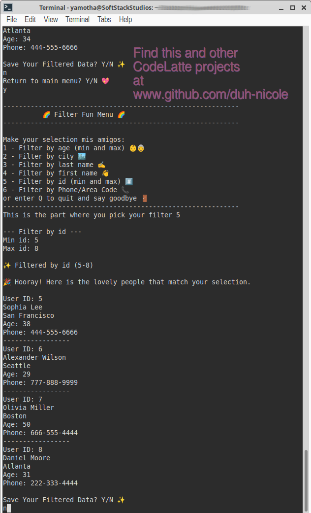

drip_filter_dashboard.sys

DripFilter
An interactive data visualization and parsing interface. Features dynamic client-side filtering, multi-criteria sorting, and responsive conditional layout styling designed to make searching through complex datasets quick and convenient.